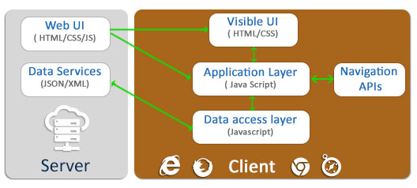

What is a Single Page Application (SPA)SPA is a web application design approach that uses modern browsers and HTML 5 to shift UI and application logic from web servers to browsers end. The web page app (HTML, JavaScript, and CSS) is retrieved with a single page load, or the appropriate resources are dynamically loaded and added to the page as necessary, usually in response to user actions. The page does not reload at any point in the process, nor does control transfer to another page. How is it achieved?Single page apps are distinguished by their ability to redraw any part of the UI without requiring a server roundtrip to retrieve HTML. This is achieved by separating the data from the presentation of data by having a model layer that handles data and a view layer that reads from the models. Two-way communication of a client application and web server replaces one-way requests from a browser (HTML 5 Web Sockets, Socket.io, SignalR). Local storage capabilities of storing data on a browser for performance and offline access replace cookies and intensive data loads from web server (HTML 5 Local storage). Behavioral difference from traditional web applications
When to go for Single Page Application?
Challenges with Single Page ApplicationsSearch Engine Optimization (SEO)SEO compatibility for an SPA is NOT automatically achieved. The crawlers for Search Engines ignore Javascript in the web page, posing problem for public facing sites to adopt SPA. Specific handling can overcome this challenge. One way could be to put hash fragments in URLs embedded in an SPA. Such URLs are crawled by some search engines (not all) like Google. Another approach used by server centric web frameworks like the Java based ItsNat is to render any hypertext in server. Developers can decide which page states must be crawlable by web spiders for SEO and be able to generate the required state in load time generating plain HTML instead of JavaScript. SecuritySingle Page Apps are a little extra vulnerable to both Cross-Site Scripting (XSS) attacks and Cross-Site Request Forgery (CSRF) attacks. We have to be little extra cautious while building SPA, to defuse such attacks though server side apps are also vulnerable. http://stephenwalther.com/archive/2013/03/05/security-issues-with-single-page-appsBrowser historyWith an SPA, by definition, "a single page", the model breaks the browser's design for page history navigation using the Forward/Back buttons. This presents a usability impediment when a user presses the back button, expecting the previous screen state within the SPA, but instead the application's single page unloads and the previous page in the browser's history is presented. The traditional solution for SPA's has been to change the browser URL's hash fragment identifier in accord with the current screen state. This can be achieved with JavaScript, and causes URL history events to be built up within the browser. As long as the Single Page Application is capable of resurrecting the same screen state from information contained within the URL hash, the expected back button behavior is retained. To further address this issue, the HTML5 specification has introduced pushState and replaceState providing programmatic access to the actual URL and browser history. Other ConsiderationsPerformance ConsiderationsPerformance should be on your mind as you build and add features to your app. If you encounter a performance issue, you should first profile the app. The Webkit inspector offers a built-in profiler that can provide a comprehensive report for CPU, memory and rendering bottlenecks. Some common performance improvements include:
MinificationBefore deploying your application, it's a good idea to combine all of your scripts into a single file; the same can be said for your CSS. This step is generally referred to as minification, and it aims to reduce the number of HTTP requests and the size of your scripts. You can minify JavaScript and CSS with: RequireJS optimizer, UglifyJS, and Jammit. They also combine your images and icons into a single sprite sheet for even more optimization. Browser considerationsThere are a variety of browsers that we must support. Libraries, like jQuery and Zepto, already abstract the DOM manipulation API, but there are other differences in JavaScript and CSS, which require extra effort on our parts. The following guidelines can help you manage these differences:
Managing browser differences may involve a bit of trial and error. Technical ApproachesClient-Side TemplatesThe most popular JavaScript-based templating systems are Underscore templates and Handlebars. EmberJS has built-in support for Handlebars. However, you do have to consider a templating engine if you decide to use a lean framework, such as Backbone. Underscore is an excellent starting point, if you have limited templating requirements. Otherwise, Handlebars works great for more advanced projects. It also offers many built-in features for more expressive templates. If you find that you require a large number of client-side templates, you can save some computation time by pre-compiling the templates on the server. Pre-compilation gives you plain JavaScript functions that you invoke to improve the load time of the page. Handlebars supports pre-compilation, making it worth the time and effort to fully explore. ExpressJS users can even use the same templating engine on the client as on the server, giving you the benefit of sharing your templates between both the client and server. ChunkingThe web page is constructed by loading chunks of HTML fragments and JSON data instead of receiving full HTML from a web server on every request. (Backbone.js, pjax, jQuery, Upshot.js) ControllersMess of JavaScript code that handles tangled DOM and data manipulations, application logic and AJAX calls is replaced by controllers that separate views and models using MVC or MVVM patterns. (Backbone.js, Knockout.js, JavascriptMVC)RoutingSelection of views and navigation (without page reloads) that preserves page state, elements and data (History.js, Crossroads.js, Backbone.js, pjax, HTML5 History API)Real-time communicationTwo-way communication of a client application and web server replaces one-way requests from a browser (HTML 5 Web Sockets, Socket.io, SignalR)Local storageCapabilities of storing data on a browser for performance and offline access replace cookies and intensive data loads from web server (HTML 5 Local storage). Can be downloaded and run from a local file with browser based storage (HTML5 storage)Other design approaches to consider
References
|